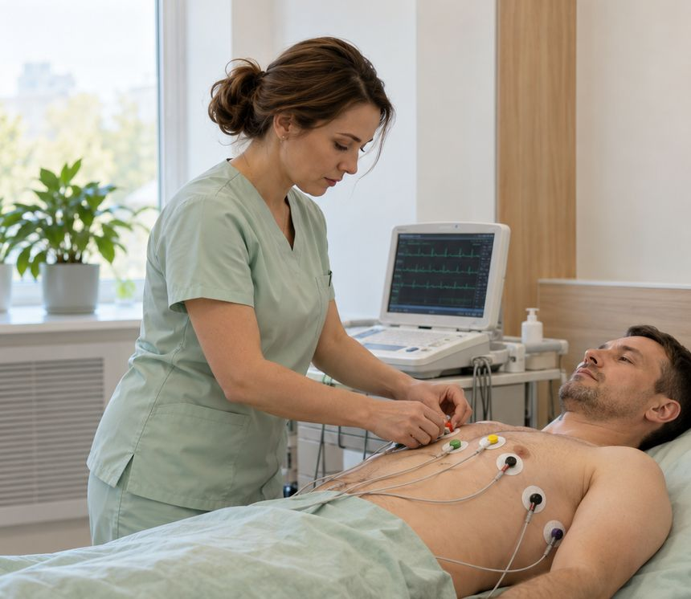

Брюшная полость
- Комплексно: печень, желчный пузырь, поджелудочная, селезёнка1 600 ₽
- Печень, желчный пузырь и протоки1 000 ₽
- Поджелудочная железа600 ₽
УЗИ в Красноярске — органов брюшной полости, малого таза, щитовидной и молочных желёз, сосудов и суставов. ЭКГ, холтеровское мониторирование, СМАД, ЭЭГ и КТГ плода. Исследования проводят врачи со стажем до 36 лет.

Ультразвук не связан с рентгеновским облучением, исследование обычно безболезненно. Ниже — самые частые исследования; полный перечень — в прайсе.
От подготовки зависит точность исследования. Если сомневаетесь — уточните у администратора при записи: он подскажет, что нужно именно для вашего исследования.
| Исследование | Подготовка |
|---|---|
| Брюшная полость, печень, желчный пузырь, поджелудочная железа | Натощак: последний приём пищи — за 6–8 часов. За 2–3 дня ограничьте продукты, вызывающие газообразование (бобовые, капуста, газированные напитки, сдоба). В день исследования не курите и не жуйте жевательную резинку. |
| Матка и придатки | Трансабдоминально — с наполненным мочевым пузырём. Трансвагинально — мочевой пузырь, наоборот, нужно опорожнить. День цикла назначает врач; для профилактического осмотра обычно выбирают первую половину цикла. |
| Молочные железы | При сохранённом цикле — как правило, в первой половине цикла (5–12-й день), если врач не назначил иное. |
| Мочевой пузырь, остаточная моча | Пузырь должен быть наполнен: примерно за час выпейте около литра негазированной воды и не мочитесь до исследования. |
| Предстательная железа (ТРУЗИ) | Требуется очищение прямой кишки — способ и время врач или администратор подскажут при записи. |
| Почки, щитовидная железа, лимфоузлы, мягкие ткани, суставы, сосуды | Специальной подготовки, как правило, не требуется. Перед исследованием сосудов лучше не курить и не пить крепкий кофе. |
Разобрали подготовку к каждому виду УЗИ: что можно есть, сколько пить, когда приходить в зависимости от дня цикла.
Цены совпадают с прайсом, утверждённым в клинике.
Исследования показывают, как органы работают — в покое, при нагрузке и в течение суток. Ожидание записи — до 3 рабочих дней.

Запись электрической активности сердца в покое. Расшифровка — 600 ₽. Перед исследованием не наносите крем на грудь и запястья.
Запись ЭКГ до и после дозированной физической нагрузки. Возможность нагрузки и её вариант врач оценивает заранее.
Небольшой прибор записывает ЭКГ непрерывно, обычно в течение суток, в обычном для вас режиме дня. Ведите дневник активности и самочувствия; прибор нельзя мочить.
Суточное мониторирование давления: манжета на плече автоматически измеряет давление днём и ночью. Во время измерения держите руку неподвижно и опущенной.
Электроэнцефалография — запись биоэлектрической активности мозга. Голова должна быть чистой, без лака, геля и масел; не приходите натощак. Назначается неврологом.
Кардиотокография — запись сердцебиения ребёнка и тонуса матки во время беременности. Срок и частоту исследования определяет акушер-гинеколог.
При установке холтера и СМАД заключается отдельный договор — образцы есть в разделе «Сведения о медицинской организации». Прибор нужно вернуть в центр в назначенное время.
Цены совпадают с прайсом, утверждённым в клинике.
Исследование можно пройти по назначению врача нашего центра, по направлению из другой клиники или по собственному желанию.
Администратор подберёт время и расскажет, как подготовиться. Ожидание функциональных исследований — до 3 рабочих дней.
Проводит врач ультразвуковой или функциональной диагностики. Для холтера и СМАД — установка прибора и возврат на следующий визит.
Вы получаете заключение — срок готовности уточните при записи. Обсудить результат можно с терапевтом или кардиологом центра.
Образование, стаж и график приёма каждого врача — в профиле. Все врачи →
Не нашли ответ? Позвоните: +7 (913) 558-87-11
Нет, на исследование можно записаться самостоятельно. Если у вас есть направление от врача, возьмите его — в нём указано, на что обратить внимание.
Да, если подготовка к ним совместима. Например, УЗИ брюшной полости делают натощак, а УЗИ мочевого пузыря — с наполненным пузырём. Скажите администратору, какие исследования нужны, и он подскажет порядок.
Нет, приборы нельзя мочить. Примите душ до установки. Также на время исследования лучше отказаться от бани, бассейна и интенсивных тренировок, если врач не дал других указаний.
Срок зависит от вида исследования: для холтера и СМАД нужна расшифровка записи. Точный срок готовности заключения администратор назовёт при записи.
В центре проводят УЗИ шейки матки (цервикометрию) и КТГ плода. Какие исследования нужны на вашем сроке, определяет акушер-гинеколог — подробнее на странице гинекологии.
Например: УЗИ, SVF, гинеколог, ЭКГ, массаж